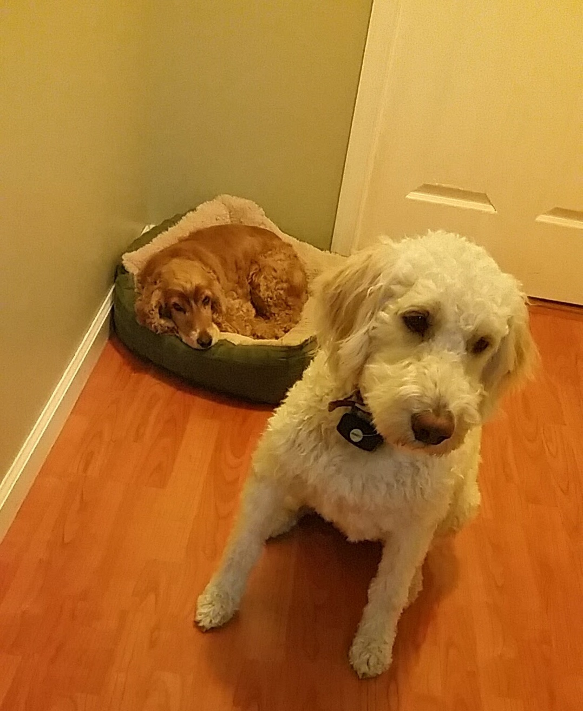
Downtime with Bailey before a rally in my hometown of Rochester, NY.
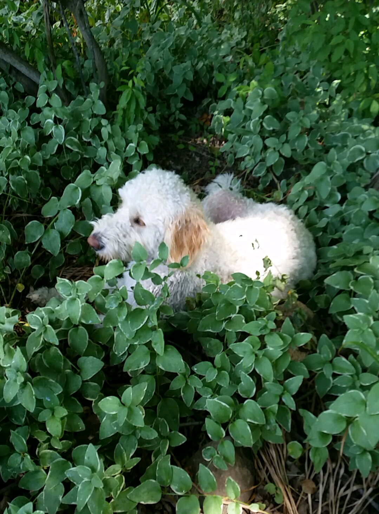
Spending some time in the great outdoors, enjoying nature.
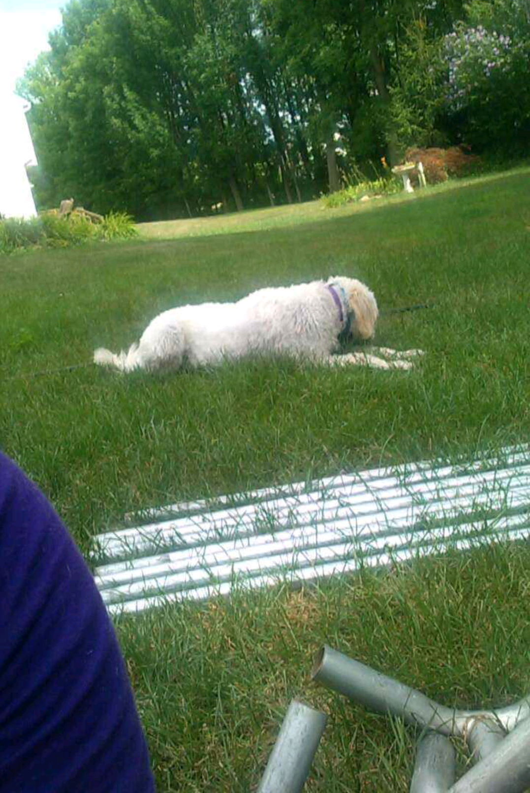
Taking a break when helping to set up for a charity event. Working like a dog!
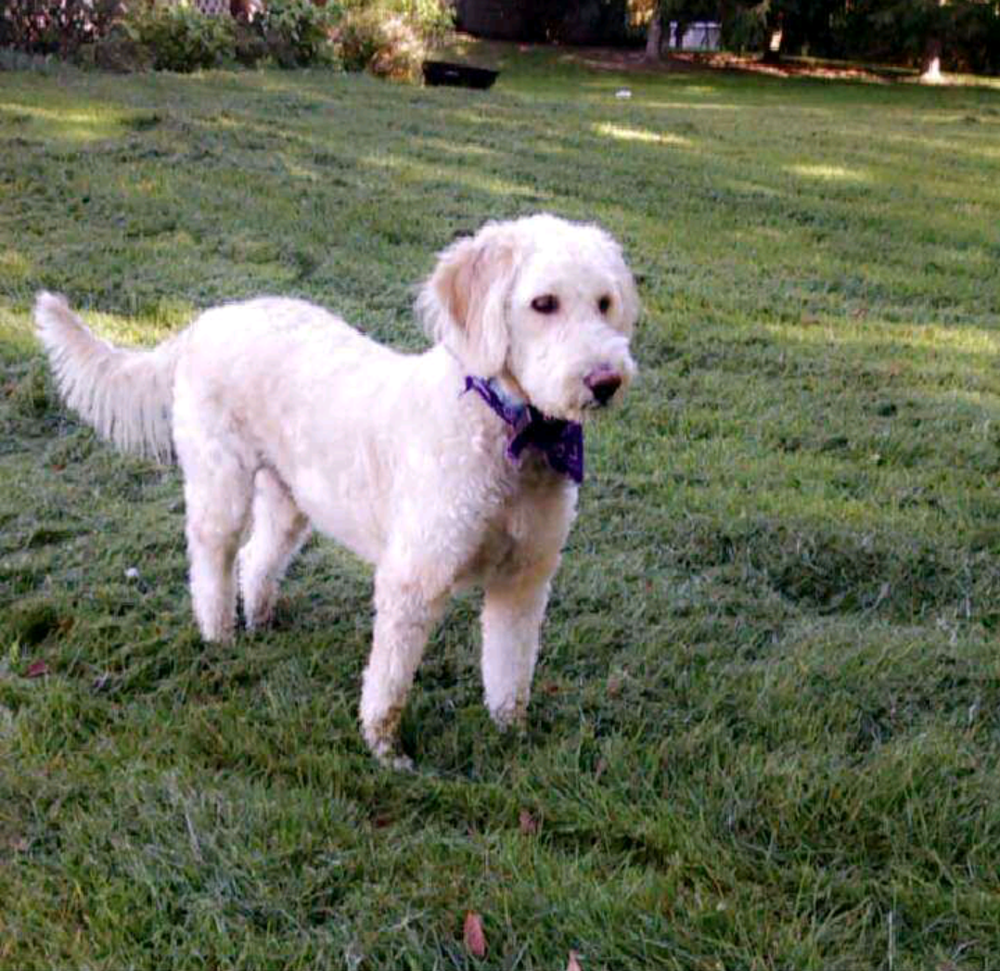
Getting over a spell of stage fright before a big speech. Always remember to take time for yourself.
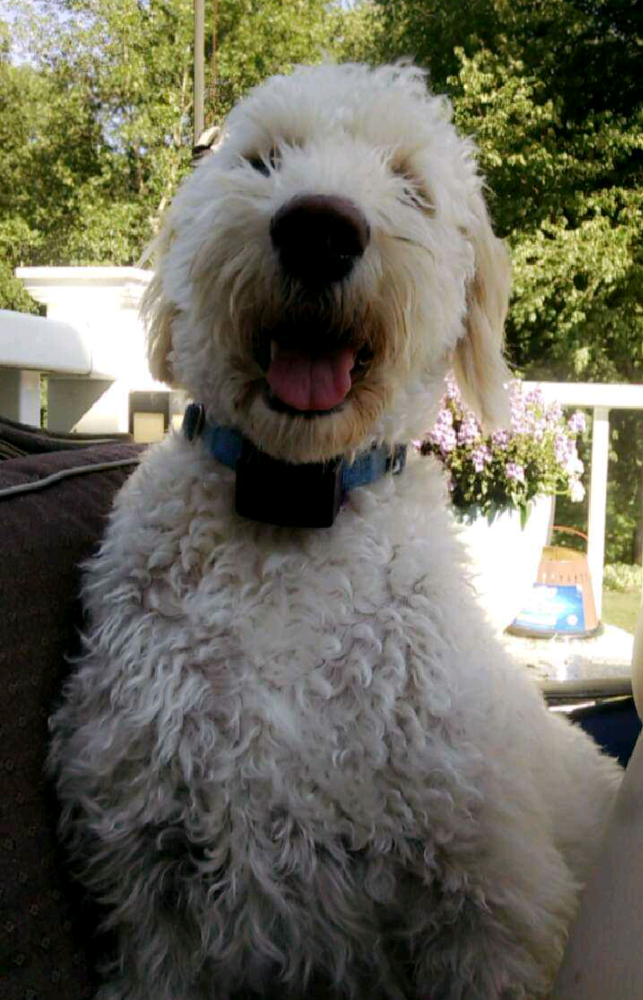
Smiling at all the work we're about to get done for this nation!
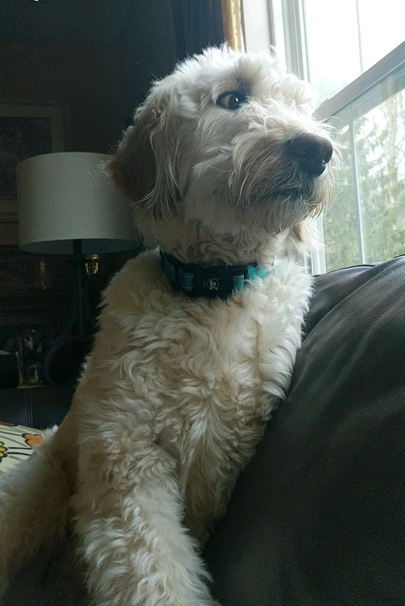
When you see the haters @ing you on Twitter.
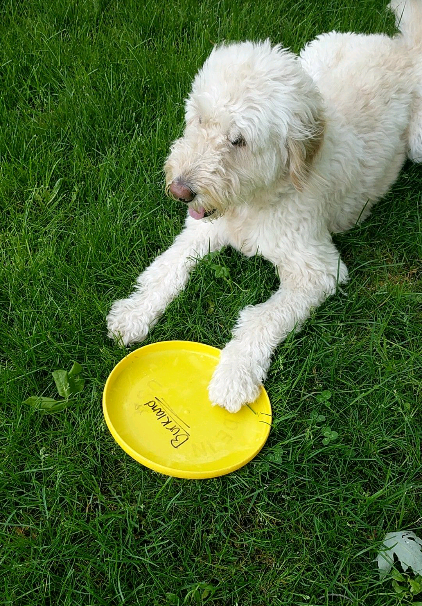
Relay for Life event at Perinton Park. Played frisbee with some constituents.
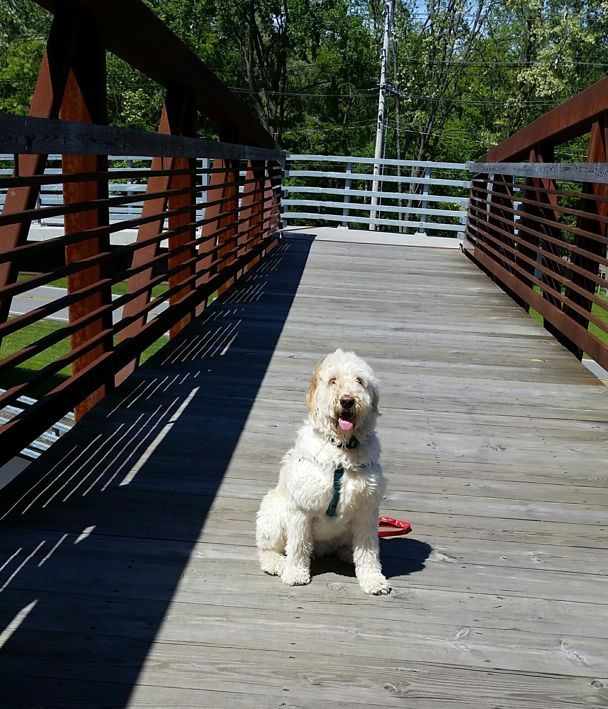
Loving the new bridge across the Erie Canal near the Perinton DPW!
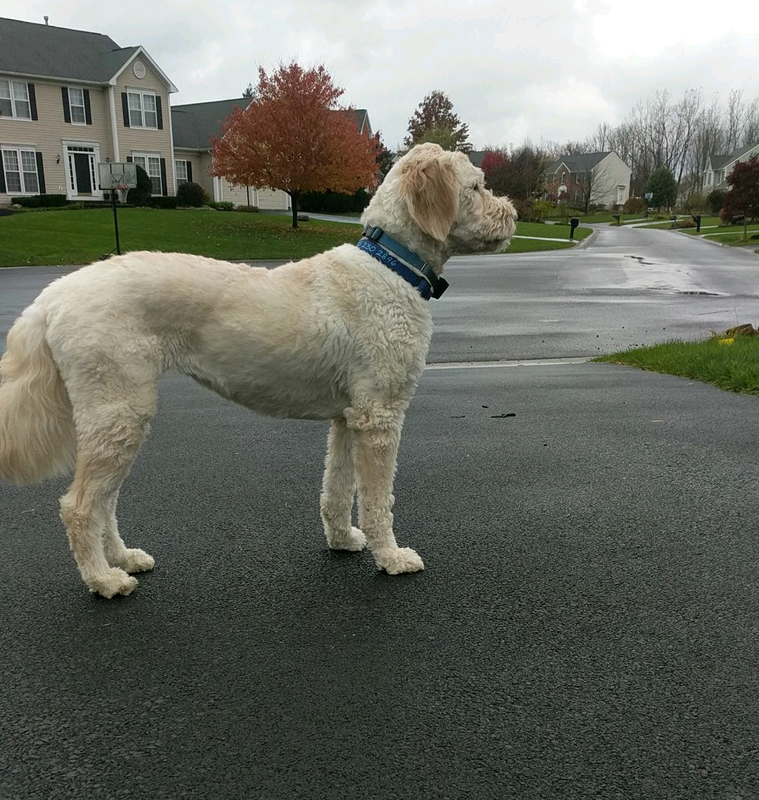
I love looking out upon my neighborhood. Such a beautiful sight.
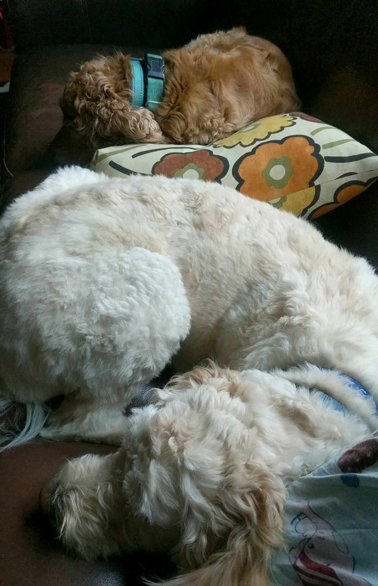
Getting some well deserved R&R with my vice presidental candidate on the campaign trail.Helping rebuild infrastructure in a local church.
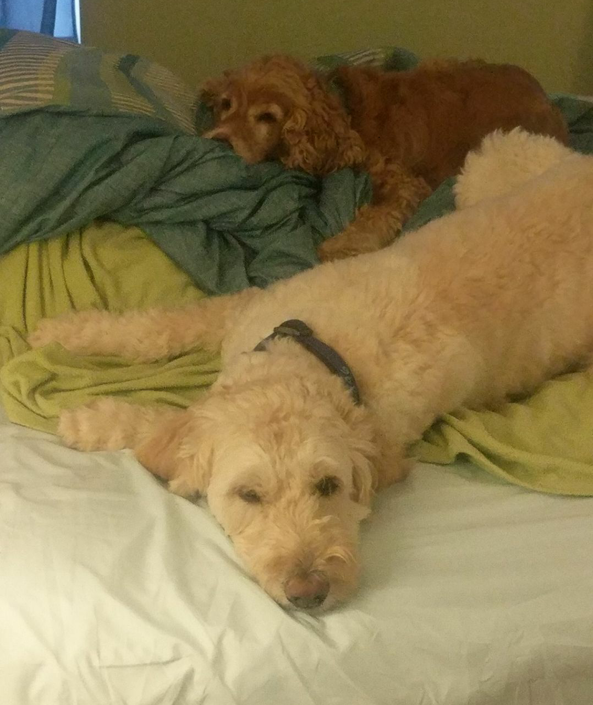
Exhausted after a long day canvasing.
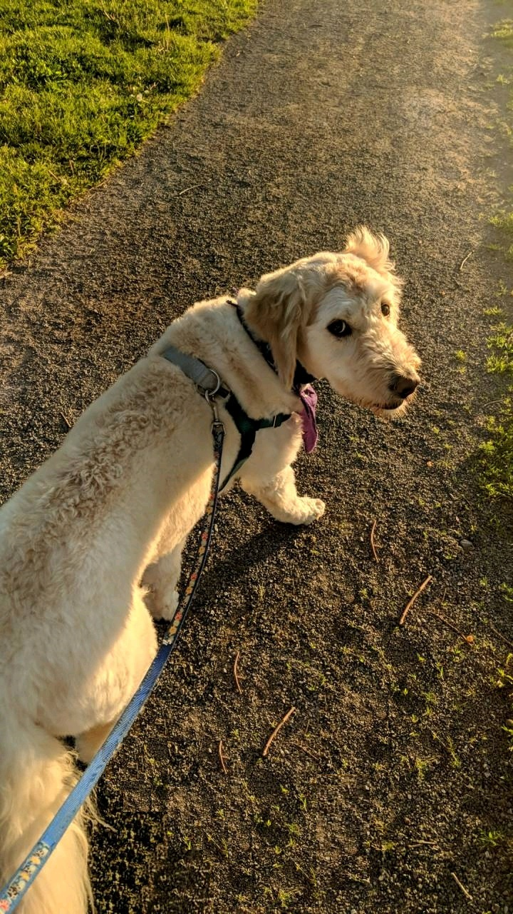
Walking in Fellows Road Park to greet constituents.
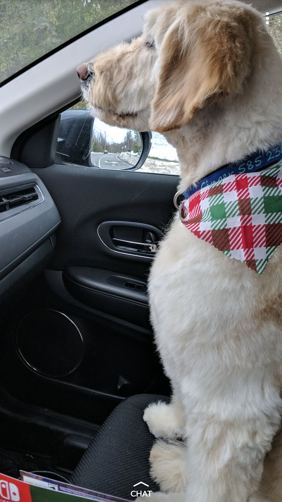
Excited for the next rally in Iowa!Taking a walk in a local park. Stay warm everyone!